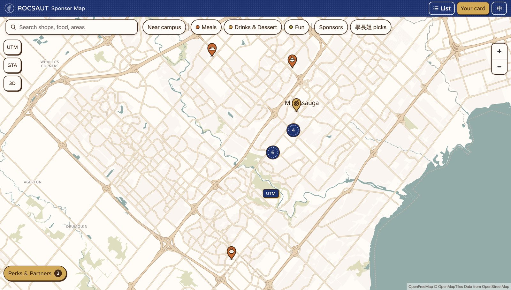
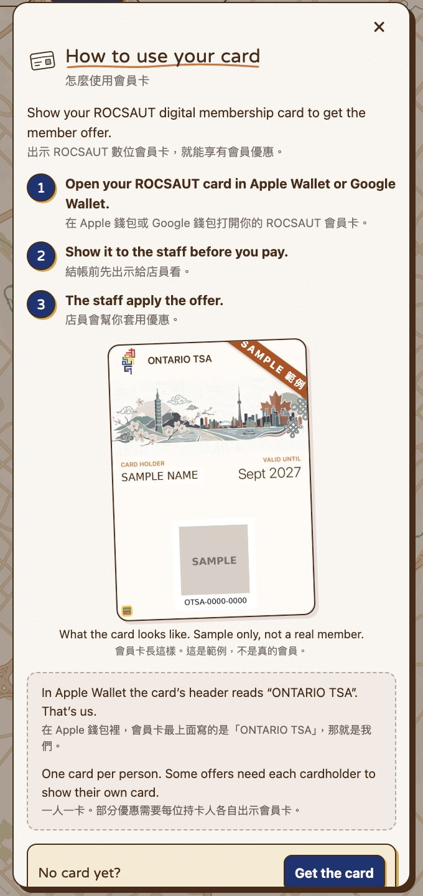

Challenge
Show members where each sponsor is and what its offer is, on a phone, in both languages. It also had to be simple enough for the next exec team to maintain.
Solution
- A map with one pin per spot. Shops in the same plaza share one pin that opens a list.
- Filters and search in both languages, and a detail sheet with the offer and directions.
- Sponsor data is checked before every build, and errors say which entry to fix.
- If the map can't load on a phone, the site switches to a list.


Key outcomes
- 21+ sponsors, partners and senior picks on the map
- App is about 15 KB gzipped, and the map loads after the page appears
- Language follows the browser and has a 中 / EN toggle
- A "How to use your card" guide, shown in both languages at once